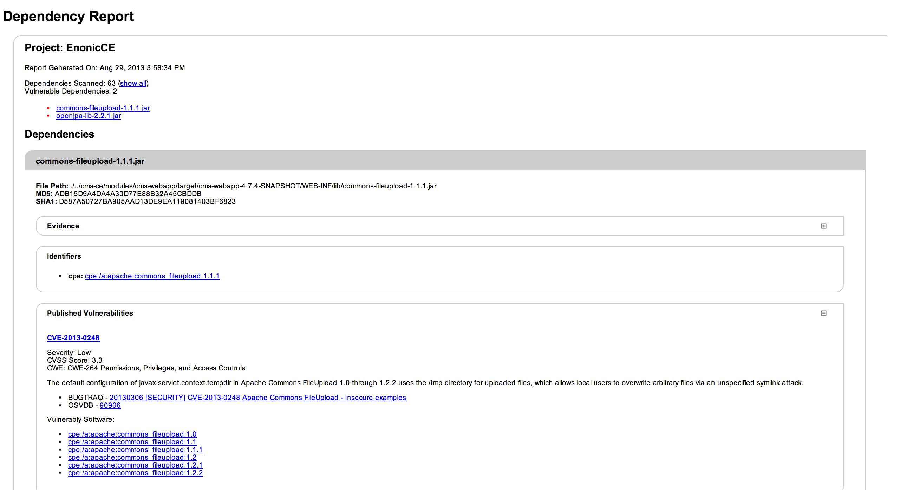
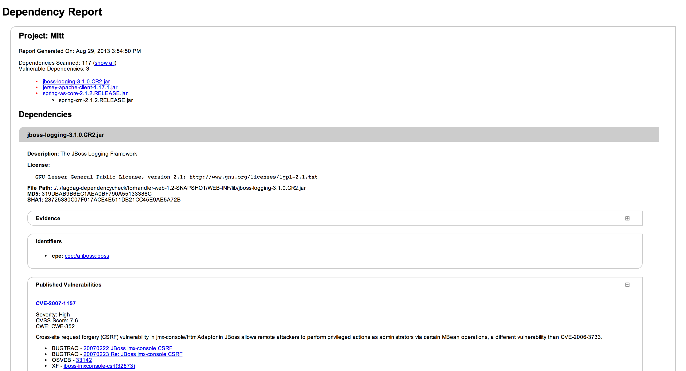

--- class: center, middle # Men versjon 1.3 av det biblioteket er jo usikker! Øyvind Kvangardsnes --- # Sikkerhet --- class: speaker # Det er viktig --- # Veldig veldig viktig --- #### (sier alle i sikkerhetsgruppa) --- # Men kunden vil bare ha features --- # ... og vi har jo veldig lite tid. --- # Og det er sikkert ingen som gidder å gjøre noe slemt ... --- # ... med lille websiden vår? --- # Vel. --- # Og vi har jo hauger av rammeverk som beskytter oss --- # Og vi har jo hauger av rammeverk som beskytter oss mot * XSS --- # Og vi har jo hauger av rammeverk som beskytter oss mot * XSS * SQL-Injection --- # Og vi har jo hauger av rammeverk som beskytter oss mot * XSS * SQL-Injection * XSRF --- # Og vi har jo hauger av rammeverk som beskytter oss mot * XSS * SQL-Injection * XSRF * Og sikkert alt annet skummelt som Erlend snakker om!!! --- # Og vi har jo hauger av rammeverk som beskytter oss mot * XSS * SQL-Injection * XSRF * Og sikkert alt annet skummelt som Erlend snakker om!!! * Samt resten av sikkerhetsgeeksa. --- # Og i tillegg skriver vi jo feilfri og sykt bra kode! --- # Da er vel alt greit??? --- # Vel. --- # Hva skjer når et bibliotek eller rammeverk har en sårbarhet ? --- # Hvordan finner du ut ... --- # ... at versjon 1.3.10 av Struts har en sårbarhet? --- # ... at versjon 1.3.10 av Struts har en sårbarhet? 1. Venter på at noen i sikkerhetsgruppa poster det på SC? --- # ... at versjon 1.3.10 av Struts har en sårbarhet? 1. Venter på at noen i sikkerhetsgruppa poster det på SC? 2. Følger med på issue trackeren til Struts sjæl? --- # ... at versjon 1.3.10 av Struts har en sårbarhet? 1. Venter på at noen i sikkerhetsgruppa poster det på SC? 2. Følger med på issue trackeren til Struts sjæl? 3. Gir opp og stikker hodet i sanden som en <strong>Struts</strong>? --- # ... at versjon 1.3.10 av Struts har en sårbarhet? 1. Venter på at noen i sikkerhetsgruppa poster det på SC? 2. Følger med på issue trackeren til Struts sjæl? 3. Gir opp og stikker hodet i sanden som en <strong>Struts</strong>? 4. Legger inn en sjekk i byggen som sjekker alle avhengigheter mot en online database over sårbarheter --- # ... at versjon 1.3.10 av Struts har en sårbarhet? 1. <del>Venter på at noen i sikkerhetsgruppa poster det på SC?</del> 2. <del>Følger med på issue trackeren til Struts sjæl?</del> 3. <del>Gir opp og stikker hodet i sanden som en <strong>Struts</strong>?</del> 4. Legger inn en sjekk i byggen som sjekker alle avhengigheter mot en online database over sårbarheter --- # Finnes alternativ 4? Må jeg skrive det selv? --- # JA DET FINNES --- # JA DET FINNES # NEI DU TRENGER IKKE SKRIVE DET SELV --- # Java 1. Dependency Check (gratis) https://github.com/jeremylong/DependencyCheck 2. Sonatype Application Health Check (pæng) http://www.sonatype.com/application-health-check 3. Diverse andre # .NET 1. SafeNuGet (gratis) https://github.com/OWASP/SafeNuGet --- # Obligatorisk uthenging av noen med usikre applikasjoner --- # Enonic ```bash dependency-check.sh --app Mitt --out . --scan ./../cms-ce/modules/cms-webapp/target/cms-webapp-4.7.4-SNAPSHOT/WEB-INF/lib/ ``` --- # Enonic ```bash dependency-check.sh --app Mitt --out . --scan ./../cms-ce/modules/cms-webapp/target/cms-webapp-4.7.4-SNAPSHOT/WEB-INF/lib/ ```  --- # Mitt ```bash dependency-check.sh --app Mitt --out . --scan ./../mitt-prosjekt/target/mitt-prosjekt-1.2-SNAPSHOT/WEB-INF/lib/ ``` --- # Mitt ```bash dependency-check.sh --app Mitt --out . --scan ./../mitt-prosjekt/target/mitt-prosjekt-1.2-SNAPSHOT/WEB-INF/lib/ ```  --- # Bruk dette. --- # Bruk dette. # Fort gjort --- # Bruk dette. # Fort gjort # Og det kan forhindre --- # Bruk dette. # Fort gjort # Og det kan forhindre # inn i helvetes mye styr --- # Takk for meg. ---